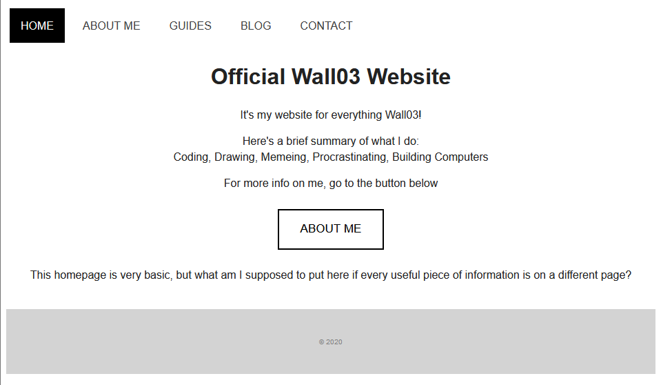

it's
redesign time
Hello!
Whew! It's been a long year. When was the last time I updated this website? According to my archive, the last release was October 11th, 2021. Shit.
I've been working on this redesign off and on for almost a year. I started coding the site off and on in October of 2022. I collaborated with a much more capable web developer, .pi. .pi basically wrote this website, changing everything and deleting legacy code that bloats the size. I present to you, Revision 5 of my website.
Let's see where we came from to where we are now. This is v1.1, from August of 2020.
This is v2, which has dark mode! Other then that, I added mobile responsiveness and more lowercase characters.

v3 added a touch of color to an otherwise black and white website. I also started playing around with rounded corners!

Oh no. v4 was a complete failure. I added neomorphism because 'trendy' and whatnot, but it looks awful in dark mode. I regret this and I'm sorry for your eyes

I started with minor updates to fix the mistakes. v4.2 removed neomorphism and added better mobile support
This is where my archive stops, but I turn to Github for the rest. I uploaded from v4.6 onward (october 31st, 2021). v4.6 added a bluer background in dark mode, a consistent style for blog posts, a lighter page, and a redesign of the blog page.
From there, all of the updates were minor enough to not mention, but you can always look at the Github page.
That brings us to today.
I started collaborating with .pi on the website via Discord and Github, and, Pi doing most of the heavy lifting, we came to something similar to this website. Then, for the next several months, I barely did any work on the site as I focused on cooler things like 3d printers and such. I then touched up this site and sent it out the world on April 4th, 2023.
this is public domain work
coded in collaboration with
Pi